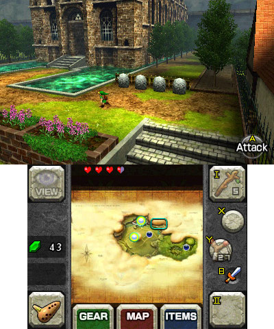

|
This is Aspect Tool, which will help you stream games at the proper and highest quality for its pixel ratios. PC games are flexible and typically can scale to whatever resolution you give them. However, the most common aspect ratio is 16:9, and should look like this. All Xbox 360 and Xbox One games are in 16:9, and should look like this.
All native WiiU games are 16:9, and should look like this.
All PS3 and PS4 games are in 16:9, and should look like this.
Both DS screens are in 4:3, and should look like this.
The 3DS' 2 screens are at different aspect ratios, with the top being a wider, 5:3 aspect ratio and the bottom being in 4:3.
GBA games are in the 3:2 aspect ratio, and should look like this. Gameboy and Gameboy Color games have a native resolution of 160x144, which loosely translated to 10:9, and should look like this.
Most Gamecube games are in 4:3 and some support 16:9.
Most Wii games support 4:3 AND 16:9. However some only support one or the other. To select an aspect ratio, simply select Widescreen or Standard in Wii System Settings for 16:9 and 4:3 respectively.
PSP games are in 30:17, which is 2 pixels short of 16:9. The difference is minor, and you should just treat it like 16:9.
Your games should look like this.
Most retro games are 4:3, and should look like this. |